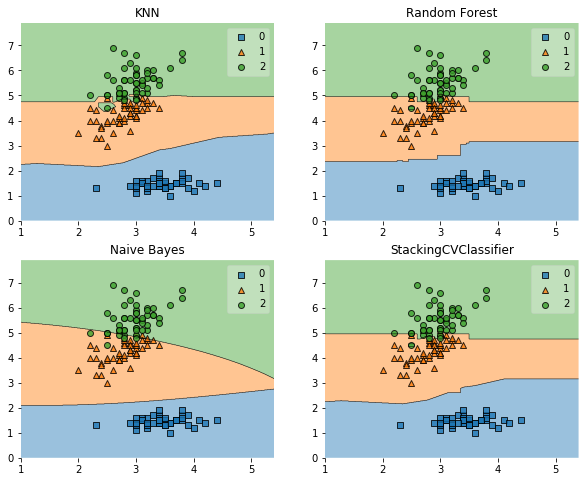
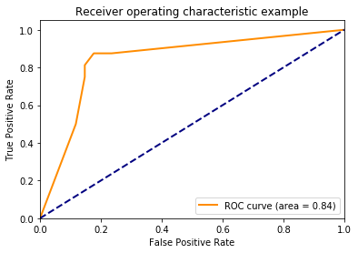

StackingCVClassifier: Stacking with cross-validation
An ensemble-learning meta-classifier for stacking using cross-validation to prepare the inputs for the level-2 classifier to prevent overfitting.
from mlxtend.classifier import StackingCVClassifier
Overview
Stacking is an ensemble learning technique to combine multiple classification models via a meta-classifier. The StackingCVClassifier extends the standard stacking algorithm (implemented as StackingClassifier) using cross-validation to prepare the input data for the level-2 classifier.
In the standard stacking procedure, the first-level classifiers are fit to the same training set that is used prepare the inputs for the second-level classifier, which may lead to overfitting. The StackingCVClassifier, however, uses the concept of cross-validation: the dataset is split into k folds, and in k successive rounds, k-1 folds are used to fit the first level classifier; in each round, the first-level classifiers are then applied to the remaining 1 subset that was not used for model fitting in each iteration. The resulting predictions are then stacked and provided -- as input data -- to the second-level classifier. After the training of the StackingCVClassifier, the first-level classifiers are fit to the entire dataset as illustrated in the figure below.

More formally, the Stacking Cross-Validation algorithm can be summarized as follows (source: [1]):

References
- [1] Tang, J., S. Alelyani, and H. Liu. "Data Classification: Algorithms and Applications." Data Mining and Knowledge Discovery Series, CRC Press (2015): pp. 498-500.
- [2] Wolpert, David H. "Stacked generalization." Neural networks 5.2 (1992): 241-259.
- [3] Marios Michailidis (2017), StackNet, StackNet Meta Modelling Framework, https://github.com/kaz-Anova/StackNet
Example 1 - Simple Stacking CV Classification
from sklearn import datasets
iris = datasets.load_iris()
X, y = iris.data[:, 1:3], iris.target
from sklearn import model_selection
from sklearn.linear_model import LogisticRegression
from sklearn.neighbors import KNeighborsClassifier
from sklearn.naive_bayes import GaussianNB
from sklearn.ensemble import RandomForestClassifier
from mlxtend.classifier import StackingCVClassifier
import numpy as np
import warnings
warnings.simplefilter('ignore')
RANDOM_SEED = 42
clf1 = KNeighborsClassifier(n_neighbors=1)
clf2 = RandomForestClassifier(random_state=RANDOM_SEED)
clf3 = GaussianNB()
lr = LogisticRegression()
# Starting from v0.16.0, StackingCVRegressor supports
# `random_state` to get deterministic result.
sclf = StackingCVClassifier(classifiers=[clf1, clf2, clf3],
meta_classifier=lr,
random_state=RANDOM_SEED)
print('3-fold cross validation:\n')
for clf, label in zip([clf1, clf2, clf3, sclf],
['KNN',
'Random Forest',
'Naive Bayes',
'StackingClassifier']):
scores = model_selection.cross_val_score(clf, X, y,
cv=3, scoring='accuracy')
print("Accuracy: %0.2f (+/- %0.2f) [%s]"
% (scores.mean(), scores.std(), label))
3-fold cross validation:
Accuracy: 0.91 (+/- 0.01) [KNN]
Accuracy: 0.95 (+/- 0.01) [Random Forest]
Accuracy: 0.91 (+/- 0.02) [Naive Bayes]
Accuracy: 0.93 (+/- 0.02) [StackingClassifier]
import matplotlib.pyplot as plt
from mlxtend.plotting import plot_decision_regions
import matplotlib.gridspec as gridspec
import itertools
gs = gridspec.GridSpec(2, 2)
fig = plt.figure(figsize=(10,8))
for clf, lab, grd in zip([clf1, clf2, clf3, sclf],
['KNN',
'Random Forest',
'Naive Bayes',
'StackingCVClassifier'],
itertools.product([0, 1], repeat=2)):
clf.fit(X, y)
ax = plt.subplot(gs[grd[0], grd[1]])
fig = plot_decision_regions(X=X, y=y, clf=clf)
plt.title(lab)
plt.show()

Example 2 - Using Probabilities as Meta-Features
Alternatively, the class-probabilities of the first-level classifiers can be used to train the meta-classifier (2nd-level classifier) by setting use_probas=True. For example, in a 3-class setting with 2 level-1 classifiers, these classifiers may make the following "probability" predictions for 1 training sample:
- classifier 1: [0.2, 0.5, 0.3]
- classifier 2: [0.3, 0.4, 0.4]
This results in k features, where k = [n_classes * n_classifiers], by stacking these level-1 probabilities:
- [0.2, 0.5, 0.3, 0.3, 0.4, 0.4]
clf1 = KNeighborsClassifier(n_neighbors=1)
clf2 = RandomForestClassifier(random_state=1)
clf3 = GaussianNB()
lr = LogisticRegression()
sclf = StackingCVClassifier(classifiers=[clf1, clf2, clf3],
use_probas=True,
meta_classifier=lr,
random_state=42)
print('3-fold cross validation:\n')
for clf, label in zip([clf1, clf2, clf3, sclf],
['KNN',
'Random Forest',
'Naive Bayes',
'StackingClassifier']):
scores = model_selection.cross_val_score(clf, X, y,
cv=3, scoring='accuracy')
print("Accuracy: %0.2f (+/- %0.2f) [%s]"
% (scores.mean(), scores.std(), label))
3-fold cross validation:
Accuracy: 0.91 (+/- 0.01) [KNN]
Accuracy: 0.95 (+/- 0.01) [Random Forest]
Accuracy: 0.91 (+/- 0.02) [Naive Bayes]
Accuracy: 0.95 (+/- 0.02) [StackingClassifier]
Example 3 - Stacked CV Classification and GridSearch
The stack allows tuning hyper parameters of the base and meta models! A full list of tunable parameters can be obtained via estimator.get_params().keys().
from sklearn.linear_model import LogisticRegression
from sklearn.neighbors import KNeighborsClassifier
from sklearn.naive_bayes import GaussianNB
from sklearn.ensemble import RandomForestClassifier
from sklearn.model_selection import GridSearchCV
from mlxtend.classifier import StackingCVClassifier
# Initializing models
clf1 = KNeighborsClassifier(n_neighbors=1)
clf2 = RandomForestClassifier(random_state=RANDOM_SEED)
clf3 = GaussianNB()
lr = LogisticRegression()
sclf = StackingCVClassifier(classifiers=[clf1, clf2, clf3],
meta_classifier=lr,
random_state=42)
params = {'kneighborsclassifier__n_neighbors': [1, 5],
'randomforestclassifier__n_estimators': [10, 50],
'meta_classifier__C': [0.1, 10.0]}
grid = GridSearchCV(estimator=sclf,
param_grid=params,
cv=5,
refit=True)
grid.fit(X, y)
cv_keys = ('mean_test_score', 'std_test_score', 'params')
for r, _ in enumerate(grid.cv_results_['mean_test_score']):
print("%0.3f +/- %0.2f %r"
% (grid.cv_results_[cv_keys[0]][r],
grid.cv_results_[cv_keys[1]][r] / 2.0,
grid.cv_results_[cv_keys[2]][r]))
print('Best parameters: %s' % grid.best_params_)
print('Accuracy: %.2f' % grid.best_score_)
0.947 +/- 0.03 {'kneighborsclassifier__n_neighbors': 1, 'meta_classifier__C': 0.1, 'randomforestclassifier__n_estimators': 10}
0.933 +/- 0.02 {'kneighborsclassifier__n_neighbors': 1, 'meta_classifier__C': 0.1, 'randomforestclassifier__n_estimators': 50}
0.940 +/- 0.02 {'kneighborsclassifier__n_neighbors': 1, 'meta_classifier__C': 10.0, 'randomforestclassifier__n_estimators': 10}
0.940 +/- 0.02 {'kneighborsclassifier__n_neighbors': 1, 'meta_classifier__C': 10.0, 'randomforestclassifier__n_estimators': 50}
0.953 +/- 0.02 {'kneighborsclassifier__n_neighbors': 5, 'meta_classifier__C': 0.1, 'randomforestclassifier__n_estimators': 10}
0.953 +/- 0.02 {'kneighborsclassifier__n_neighbors': 5, 'meta_classifier__C': 0.1, 'randomforestclassifier__n_estimators': 50}
0.953 +/- 0.02 {'kneighborsclassifier__n_neighbors': 5, 'meta_classifier__C': 10.0, 'randomforestclassifier__n_estimators': 10}
0.953 +/- 0.02 {'kneighborsclassifier__n_neighbors': 5, 'meta_classifier__C': 10.0, 'randomforestclassifier__n_estimators': 50}
Best parameters: {'kneighborsclassifier__n_neighbors': 5, 'meta_classifier__C': 0.1, 'randomforestclassifier__n_estimators': 10}
Accuracy: 0.95
In case we are planning to use a regression algorithm multiple times, all we need to do is to add an additional number suffix in the parameter grid as shown below:
from sklearn.model_selection import GridSearchCV
# Initializing models
clf1 = KNeighborsClassifier(n_neighbors=1)
clf2 = RandomForestClassifier(random_state=RANDOM_SEED)
clf3 = GaussianNB()
lr = LogisticRegression()
sclf = StackingCVClassifier(classifiers=[clf1, clf1, clf2, clf3],
meta_classifier=lr,
random_state=RANDOM_SEED)
params = {'kneighborsclassifier-1__n_neighbors': [1, 5],
'kneighborsclassifier-2__n_neighbors': [1, 5],
'randomforestclassifier__n_estimators': [10, 50],
'meta_classifier__C': [0.1, 10.0]}
grid = GridSearchCV(estimator=sclf,
param_grid=params,
cv=5,
refit=True)
grid.fit(X, y)
cv_keys = ('mean_test_score', 'std_test_score', 'params')
for r, _ in enumerate(grid.cv_results_['mean_test_score']):
print("%0.3f +/- %0.2f %r"
% (grid.cv_results_[cv_keys[0]][r],
grid.cv_results_[cv_keys[1]][r] / 2.0,
grid.cv_results_[cv_keys[2]][r]))
print('Best parameters: %s' % grid.best_params_)
print('Accuracy: %.2f' % grid.best_score_)
0.940 +/- 0.02 {'kneighborsclassifier-1__n_neighbors': 1, 'kneighborsclassifier-2__n_neighbors': 1, 'meta_classifier__C': 0.1, 'randomforestclassifier__n_estimators': 10}
0.940 +/- 0.02 {'kneighborsclassifier-1__n_neighbors': 1, 'kneighborsclassifier-2__n_neighbors': 1, 'meta_classifier__C': 0.1, 'randomforestclassifier__n_estimators': 50}
0.940 +/- 0.02 {'kneighborsclassifier-1__n_neighbors': 1, 'kneighborsclassifier-2__n_neighbors': 1, 'meta_classifier__C': 10.0, 'randomforestclassifier__n_estimators': 10}
0.940 +/- 0.02 {'kneighborsclassifier-1__n_neighbors': 1, 'kneighborsclassifier-2__n_neighbors': 1, 'meta_classifier__C': 10.0, 'randomforestclassifier__n_estimators': 50}
0.960 +/- 0.02 {'kneighborsclassifier-1__n_neighbors': 1, 'kneighborsclassifier-2__n_neighbors': 5, 'meta_classifier__C': 0.1, 'randomforestclassifier__n_estimators': 10}
0.953 +/- 0.02 {'kneighborsclassifier-1__n_neighbors': 1, 'kneighborsclassifier-2__n_neighbors': 5, 'meta_classifier__C': 0.1, 'randomforestclassifier__n_estimators': 50}
0.953 +/- 0.02 {'kneighborsclassifier-1__n_neighbors': 1, 'kneighborsclassifier-2__n_neighbors': 5, 'meta_classifier__C': 10.0, 'randomforestclassifier__n_estimators': 10}
0.953 +/- 0.02 {'kneighborsclassifier-1__n_neighbors': 1, 'kneighborsclassifier-2__n_neighbors': 5, 'meta_classifier__C': 10.0, 'randomforestclassifier__n_estimators': 50}
0.960 +/- 0.02 {'kneighborsclassifier-1__n_neighbors': 5, 'kneighborsclassifier-2__n_neighbors': 1, 'meta_classifier__C': 0.1, 'randomforestclassifier__n_estimators': 10}
0.953 +/- 0.02 {'kneighborsclassifier-1__n_neighbors': 5, 'kneighborsclassifier-2__n_neighbors': 1, 'meta_classifier__C': 0.1, 'randomforestclassifier__n_estimators': 50}
0.953 +/- 0.02 {'kneighborsclassifier-1__n_neighbors': 5, 'kneighborsclassifier-2__n_neighbors': 1, 'meta_classifier__C': 10.0, 'randomforestclassifier__n_estimators': 10}
0.953 +/- 0.02 {'kneighborsclassifier-1__n_neighbors': 5, 'kneighborsclassifier-2__n_neighbors': 1, 'meta_classifier__C': 10.0, 'randomforestclassifier__n_estimators': 50}
0.953 +/- 0.02 {'kneighborsclassifier-1__n_neighbors': 5, 'kneighborsclassifier-2__n_neighbors': 5, 'meta_classifier__C': 0.1, 'randomforestclassifier__n_estimators': 10}
0.953 +/- 0.02 {'kneighborsclassifier-1__n_neighbors': 5, 'kneighborsclassifier-2__n_neighbors': 5, 'meta_classifier__C': 0.1, 'randomforestclassifier__n_estimators': 50}
0.953 +/- 0.02 {'kneighborsclassifier-1__n_neighbors': 5, 'kneighborsclassifier-2__n_neighbors': 5, 'meta_classifier__C': 10.0, 'randomforestclassifier__n_estimators': 10}
0.953 +/- 0.02 {'kneighborsclassifier-1__n_neighbors': 5, 'kneighborsclassifier-2__n_neighbors': 5, 'meta_classifier__C': 10.0, 'randomforestclassifier__n_estimators': 50}
Best parameters: {'kneighborsclassifier-1__n_neighbors': 1, 'kneighborsclassifier-2__n_neighbors': 5, 'meta_classifier__C': 0.1, 'randomforestclassifier__n_estimators': 10}
Accuracy: 0.96
Note
The StackingClassifier also enables grid search over the classifiers argument. When there are level-mixed hyperparameters, GridSearchCV will try to replace hyperparameters in a top-down order, i.e., classifers -> single base classifier -> classifier hyperparameter. For instance, given a hyperparameter grid such as
params = {'randomforestclassifier__n_estimators': [1, 100],
'classifiers': [(clf1, clf1, clf1), (clf2, clf3)]}
it will first use the instance settings of either (clf1, clf1, clf1) or (clf2, clf3). Then it will replace the 'n_estimators' settings for a matching classifier based on 'randomforestclassifier__n_estimators': [1, 100].
Example 4 - Stacking of Classifiers that Operate on Different Feature Subsets
The different level-1 classifiers can be fit to different subsets of features in the training dataset. The following example illustrates how this can be done on a technical level using scikit-learn pipelines and the ColumnSelector:
from sklearn.datasets import load_iris
from mlxtend.classifier import StackingCVClassifier
from mlxtend.feature_selection import ColumnSelector
from sklearn.pipeline import make_pipeline
from sklearn.linear_model import LogisticRegression
iris = load_iris()
X = iris.data
y = iris.target
pipe1 = make_pipeline(ColumnSelector(cols=(0, 2)),
LogisticRegression())
pipe2 = make_pipeline(ColumnSelector(cols=(1, 2, 3)),
LogisticRegression())
sclf = StackingCVClassifier(classifiers=[pipe1, pipe2],
meta_classifier=LogisticRegression(),
random_state=42)
sclf.fit(X, y)
StackingCVClassifier(classifiers=[Pipeline(memory=None,
steps=[('columnselector',
ColumnSelector(cols=(0, 2),
drop_axis=False)),
('logisticregression',
LogisticRegression(C=1.0,
class_weight=None,
dual=False,
fit_intercept=True,
intercept_scaling=1,
l1_ratio=None,
max_iter=100,
multi_class='auto',
n_jobs=None,
penalty='l2',
random_state=None,
solver='lbfgs',
tol=0.0...
fit_intercept=True,
intercept_scaling=1,
l1_ratio=None,
max_iter=100,
multi_class='auto',
n_jobs=None,
penalty='l2',
random_state=None,
solver='lbfgs',
tol=0.0001, verbose=0,
warm_start=False),
n_jobs=None, pre_dispatch='2*n_jobs', random_state=42,
shuffle=True, store_train_meta_features=False,
stratify=True, use_clones=True,
use_features_in_secondary=False, use_probas=False,
verbose=0)
Example 5 -- ROC Curve with decision_function
Like other scikit-learn classifiers, the StackingCVClassifier has an decision_function method that can be used for plotting ROC curves. Note that the decision_function expects and requires the meta-classifier to implement a decision_function.
from sklearn import model_selection
from sklearn.linear_model import LogisticRegression
from sklearn.neighbors import KNeighborsClassifier
from sklearn.svm import SVC
from sklearn.ensemble import RandomForestClassifier
from mlxtend.classifier import StackingCVClassifier
from sklearn.metrics import roc_curve, auc
import numpy as np
from sklearn.model_selection import train_test_split
from sklearn import datasets
from sklearn.preprocessing import label_binarize
from sklearn.multiclass import OneVsRestClassifier
iris = datasets.load_iris()
X, y = iris.data[:, [0, 1]], iris.target
# Binarize the output
y = label_binarize(y, classes=[0, 1, 2])
n_classes = y.shape[1]
RANDOM_SEED = 42
X_train, X_test, y_train, y_test = train_test_split(
X, y, test_size=0.33, random_state=RANDOM_SEED)
clf1 = LogisticRegression()
clf2 = RandomForestClassifier(random_state=RANDOM_SEED)
clf3 = SVC(random_state=RANDOM_SEED)
lr = LogisticRegression()
sclf = StackingCVClassifier(classifiers=[clf1, clf2, clf3],
meta_classifier=lr)
# Learn to predict each class against the other
classifier = OneVsRestClassifier(sclf)
Using predict_proba()
y_score = classifier.fit(X_train, y_train).predict_proba(X_test)
# Compute ROC curve and ROC area for each class
fpr = dict()
tpr = dict()
roc_auc = dict()
for i in range(n_classes):
fpr[i], tpr[i], _ = roc_curve(y_test[:, i], y_score[:, i])
roc_auc[i] = auc(fpr[i], tpr[i])
# Compute micro-average ROC curve and ROC area
fpr["micro"], tpr["micro"], _ = roc_curve(y_test.ravel(), y_score.ravel())
roc_auc["micro"] = auc(fpr["micro"], tpr["micro"])
plt.figure()
lw = 2
plt.plot(fpr[2], tpr[2], color='darkorange',
lw=lw, label='ROC curve (area = %0.2f)' % roc_auc[2])
plt.plot([0, 1], [0, 1], color='navy', lw=lw, linestyle='--')
plt.xlim([0.0, 1.0])
plt.ylim([0.0, 1.05])
plt.xlabel('False Positive Rate')
plt.ylabel('True Positive Rate')
plt.title('Receiver operating characteristic example')
plt.legend(loc="lower right")
plt.show()

Using decision_function()
y_score = classifier.fit(X_train, y_train).decision_function(X_test)
# Compute ROC curve and ROC area for each class
fpr = dict()
tpr = dict()
roc_auc = dict()
for i in range(n_classes):
fpr[i], tpr[i], _ = roc_curve(y_test[:, i], y_score[:, i])
roc_auc[i] = auc(fpr[i], tpr[i])
# Compute micro-average ROC curve and ROC area
fpr["micro"], tpr["micro"], _ = roc_curve(y_test.ravel(), y_score.ravel())
roc_auc["micro"] = auc(fpr["micro"], tpr["micro"])
plt.figure()
lw = 2
plt.plot(fpr[2], tpr[2], color='darkorange',
lw=lw, label='ROC curve (area = %0.2f)' % roc_auc[2])
plt.plot([0, 1], [0, 1], color='navy', lw=lw, linestyle='--')
plt.xlim([0.0, 1.0])
plt.ylim([0.0, 1.05])
plt.xlabel('False Positive Rate')
plt.ylabel('True Positive Rate')
plt.title('Receiver operating characteristic example')
plt.legend(loc="lower right")
plt.show()

API
StackingCVClassifier(classifiers, meta_classifier, use_probas=False, drop_proba_col=None, cv=2, shuffle=True, random_state=None, stratify=True, verbose=0, use_features_in_secondary=False, store_train_meta_features=False, use_clones=True, n_jobs=None, pre_dispatch='2n_jobs')*
A 'Stacking Cross-Validation' classifier for scikit-learn estimators.
New in mlxtend v0.4.3
Parameters
-
classifiers: array-like, shape = [n_classifiers]A list of classifiers. Invoking the
fitmethod on theStackingCVClassiferwill fit clones of these original classifiers that will be stored in the class attributeself.clfs_. -
meta_classifier: objectThe meta-classifier to be fitted on the ensemble of classifiers
-
use_probas: bool (default: False)If True, trains meta-classifier based on predicted probabilities instead of class labels.
-
drop_proba_col: string (default: None)Drops extra "probability" column in the feature set, because it is redundant: p(y_c) = 1 - p(y_1) + p(y_2) + ... + p(y_{c-1}). This can be useful for meta-classifiers that are sensitive to perfectly collinear features. If
last, drops last probability column. Iffirst, drops first probability column. Only relevant ifuse_probas=True. -
cv: int, cross-validation generator or an iterable, optional (default: 2)Determines the cross-validation splitting strategy. Possible inputs for cv are: - None, to use the default 2-fold cross validation, - integer, to specify the number of folds in a
(Stratified)KFold, - An object to be used as a cross-validation generator. - An iterable yielding train, test splits. For integer/None inputs, it will use either aKFoldorStratifiedKFoldcross validation depending the value ofstratifyargument. -
shuffle: bool (default: True)If True, and the
cvargument is integer, the training data will be shuffled at fitting stage prior to cross-validation. If thecvargument is a specific cross validation technique, this argument is omitted. -
random_state: int, RandomState instance or None, optional (default: None)Constrols the randomness of the cv splitter. Used when
cvis integer andshuffle=True. New in v0.16.0. -
stratify: bool (default: True)If True, and the
cvargument is integer it will follow a stratified K-Fold cross validation technique. If thecvargument is a specific cross validation technique, this argument is omitted. -
verbose: int, optional (default=0)Controls the verbosity of the building process. -
verbose=0(default): Prints nothing -verbose=1: Prints the number & name of the regressor being fitted and which fold is currently being used for fitting -verbose=2: Prints info about the parameters of the regressor being fitted -verbose>2: Changesverboseparam of the underlying regressor to self.verbose - 2 -
use_features_in_secondary: bool (default: False)If True, the meta-classifier will be trained both on the predictions of the original classifiers and the original dataset. If False, the meta-classifier will be trained only on the predictions of the original classifiers.
-
store_train_meta_features: bool (default: False)If True, the meta-features computed from the training data used for fitting the meta-classifier stored in the
self.train_meta_features_array, which can be accessed after callingfit. -
use_clones: bool (default: True)Clones the classifiers for stacking classification if True (default) or else uses the original ones, which will be refitted on the dataset upon calling the
fitmethod. Hence, if use_clones=True, the original input classifiers will remain unmodified upon using the StackingCVClassifier'sfitmethod. Settinguse_clones=Falseis recommended if you are working with estimators that are supporting the scikit-learn fit/predict API interface but are not compatible to scikit-learn'sclonefunction. -
n_jobs: int or None, optional (default=None)The number of CPUs to use to do the computation.
Nonemeans 1 unless in a :obj:joblib.parallel_backendcontext.-1means using all processors. See :term:Glossary <n_jobs>for more details. New in v0.16.0. -
pre_dispatch: int, or string, optionalControls the number of jobs that get dispatched during parallel execution. Reducing this number can be useful to avoid an explosion of memory consumption when more jobs get dispatched than CPUs can process. This parameter can be: - None, in which case all the jobs are immediately created and spawned. Use this for lightweight and fast-running jobs, to avoid delays due to on-demand spawning of the jobs - An int, giving the exact number of total jobs that are spawned - A string, giving an expression as a function of n_jobs, as in '2*n_jobs' New in v0.16.0.
Attributes
-
clfs_: list, shape=[n_classifiers]Fitted classifiers (clones of the original classifiers)
-
meta_clf_: estimatorFitted meta-classifier (clone of the original meta-estimator)
-
train_meta_features: numpy array, shape = [n_samples, n_classifiers]meta-features for training data, where n_samples is the number of samples in training data and n_classifiers is the number of classfiers.
Examples
For usage examples, please see https://rasbt.github.io/mlxtend/user_guide/classifier/StackingCVClassifier/
Methods
decision_function(X)
Predict class confidence scores for X.
Parameters
-
X: {array-like, sparse matrix}, shape = [n_samples, n_features]Training vectors, where n_samples is the number of samples and n_features is the number of features.
Returns
-
scores: shape=(n_samples,) if n_classes == 2 else (n_samples, n_classes).Confidence scores per (sample, class) combination. In the binary case, confidence score for self.classes_[1] where >0 means this class would be predicted.
fit(X, y, groups=None, sample_weight=None)
Fit ensemble classifers and the meta-classifier.
Parameters
-
X: numpy array, shape = [n_samples, n_features]Training vectors, where n_samples is the number of samples and n_features is the number of features.
-
y: numpy array, shape = [n_samples]Target values.
-
groups: numpy array/None, shape = [n_samples]The group that each sample belongs to. This is used by specific folding strategies such as GroupKFold()
-
sample_weight: array-like, shape = [n_samples], optionalSample weights passed as sample_weights to each regressor in the regressors list as well as the meta_regressor. Raises error if some regressor does not support sample_weight in the fit() method.
Returns
self: object
fit_transform(X, y=None, fit_params)
Fit to data, then transform it.
Fits transformer to X and y with optional parameters fit_params and returns a transformed version of X.
Parameters
-
X: numpy array of shape [n_samples, n_features]Training set.
-
y: numpy array of shape [n_samples]Target values.
-
**fit_params: dictAdditional fit parameters.
Returns
-
X_new: numpy array of shape [n_samples, n_features_new]Transformed array.
get_params(deep=True)
Return estimator parameter names for GridSearch support.
predict(X)
Predict target values for X.
Parameters
-
X: numpy array, shape = [n_samples, n_features]Training vectors, where n_samples is the number of samples and n_features is the number of features.
Returns
-
labels: array-like, shape = [n_samples]Predicted class labels.
predict_meta_features(X)
Get meta-features of test-data.
Parameters
-
X: numpy array, shape = [n_samples, n_features]Test vectors, where n_samples is the number of samples and n_features is the number of features.
Returns
-
meta-features: numpy array, shape = [n_samples, n_classifiers]Returns the meta-features for test data.
predict_proba(X)
Predict class probabilities for X.
Parameters
-
X: {array-like, sparse matrix}, shape = [n_samples, n_features]Training vectors, where n_samples is the number of samples and n_features is the number of features.
Returns
-
proba: array-like, shape = [n_samples, n_classes] or a list of n_outputs of such arrays if n_outputs > 1.Probability for each class per sample.
score(X, y, sample_weight=None)
Return the mean accuracy on the given test data and labels.
In multi-label classification, this is the subset accuracy which is a harsh metric since you require for each sample that each label set be correctly predicted.
Parameters
-
X: array-like of shape (n_samples, n_features)Test samples.
-
y: array-like of shape (n_samples,) or (n_samples, n_outputs)True labels for X.
-
sample_weight: array-like of shape (n_samples,), default=NoneSample weights.
Returns
-
score: floatMean accuracy of self.predict(X) wrt. y.
set_params(params)
Set the parameters of this estimator.
Valid parameter keys can be listed with get_params().
Returns
self
Properties
named_classifiers
None